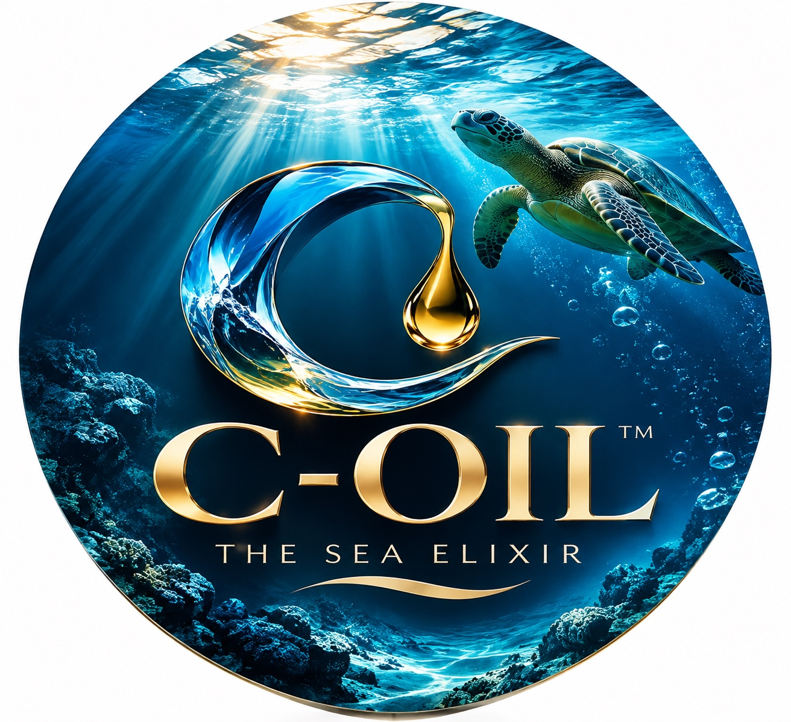
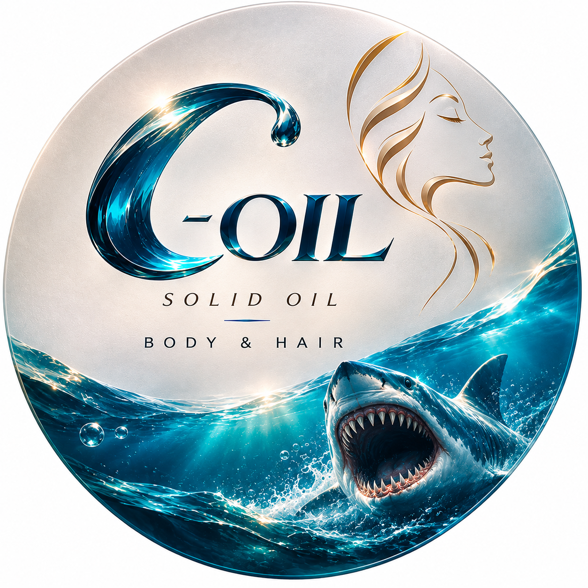

01
The base
Emollient materials create the product's texture and its feel during application.
Your journey doesn't end with your purchase. It begins here—with the story behind the C, the marine botanical at the heart of our formulation, and the everyday ritual you make your own.
TREASURES ARE BETTER DISCOVERED.

Many personal-care oils begin with a base of emollient ingredients. Some are liquid; others hold a soft, solid texture. The way they feel depends on their complete formulation, their concentration, and how they are made.
C-OIL begins with a different source of inspiration: the world beneath the ocean's surface.
Meet the story behind C-OIL.
Learn about the botanical in our formulation.
Build your own daily care ritual.

Beneath the surface.Every product has a beginning. C-OIL's identity draws on a place where light travels differently, plants grow beneath the surface, and entire ecosystems exist beyond our everyday view.
Our visual mark—the flowing C—carries that idea forward. It is a signature meant to be recognized, not overexplained.
The name C-OIL is the modern identity of the formula developed by its founder. Its botanical inspiration is older, and its full story continues to take shape through research, formulation, and careful production.
Read the C-OIL story →Solid personal-care oils typically combine ingredients that remain semi-solid at room temperature with materials that help them spread smoothly. Different formulations can feel lighter, richer, softer, or firmer.
Emollient materials create the product's texture and its feel during application.
Posidonia oceanica is a founder-confirmed ingredient in C-OIL's formula.
A compact format invites a small, considered moment of body and hair care.
Neptune grass is a flowering seagrass native to the Mediterranean. Its submerged meadows are part of a remarkable marine ecosystem.
Research has examined extracts from its leaves and explored their properties in laboratory and experimental cosmetic formulations. C-OIL's founder identifies this plant as part of the C-OIL formulation.
Explore the ingredient ↗What you choose to put on your skin matters. Begin with product information, understand your own needs, and make room for care that suits you.
Developed without added perfume, in keeping with the founder's product specification.
A compact semi-solid format designed for measured application.
Created for personal care as part of a considered daily routine.
“Treasures Are Better Discovered.”C-OIL · THE SEA ELIXIR
One small object. A beginning you can carry with you.
The Sea Elixir. A fragrance-free solid oil in a compact, portable form.
KSh 150
Target retail price · Kenyan shillings
Already tried C-OIL? Tell us what the experience was like in your own words. Positive, critical, detailed, or simple—every genuine perspective matters.
No manufactured testimonials. This is a space for authentic customer voices.
See all reviews →Send us your honest feedback about C-OIL.
C-OIL — The Sea Elixir is a compact, fragrance-free solid oil for personal care.
Posidonia oceanica, also called Neptune grass, is an ingredient in the C-OIL formulation.
Use the review section on this site to share your genuine experience with the C-OIL team.